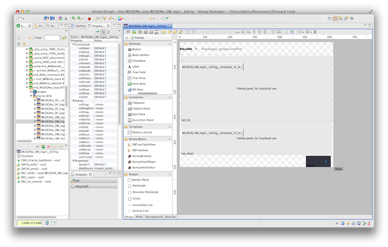
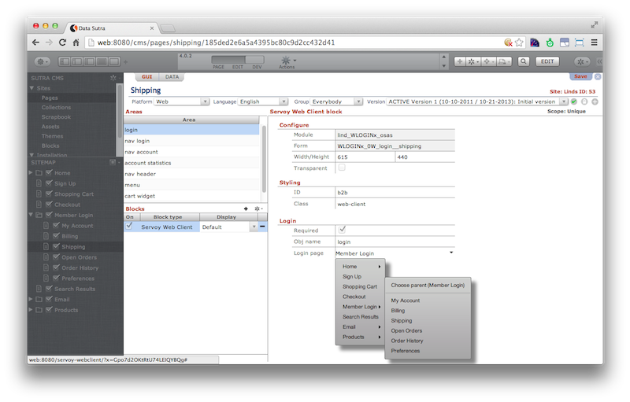
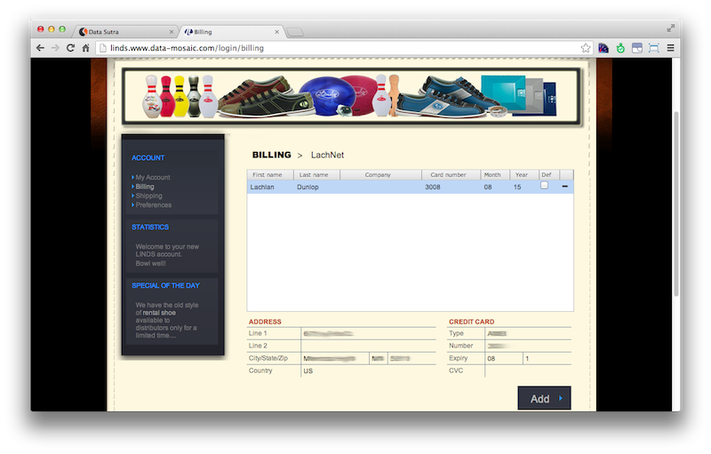

Servoy Web Client Block
Sutra CMS comes with a special block worth its own mention: the Servoy Web Client (SWC) block.
This block allows you to easily assign any SWC form to a page by simply selecting your SWC module and form from selector fields (we go grab all the available modules and forms for you). So if you don’t like the complexities of client-side web programming and want to speed things up, code your business logic with Servoy Web Client and then just include anywhere on your site.
The use of the SWC block allows you to implement hybrid website/applications where the navigation is supplied by the CMS and the functionality by SWC. Benefits include:
- Not having to build the navigation layer in SWC
- Real URL’s for linking and SEO
- Pages with real flow instead of fixed css
- Apps that look like your website
- Ability to mix in other block types on the same page as your app
The SWC block leverages the best of both single page rich internet applications (RIA’s) and CMS’s in the same platform. This gives you a lot of flexibility in delivering solutions that get done fast, look good and play well in the enterprise environment.


